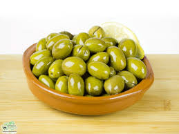
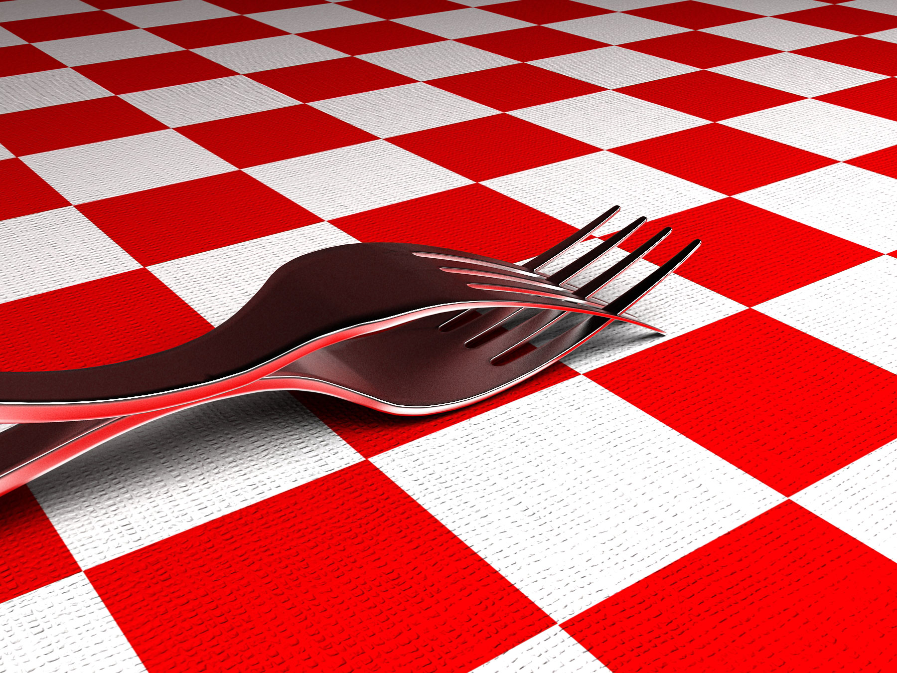
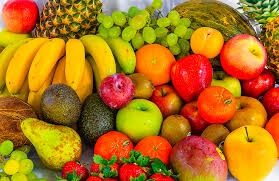
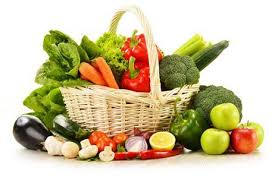
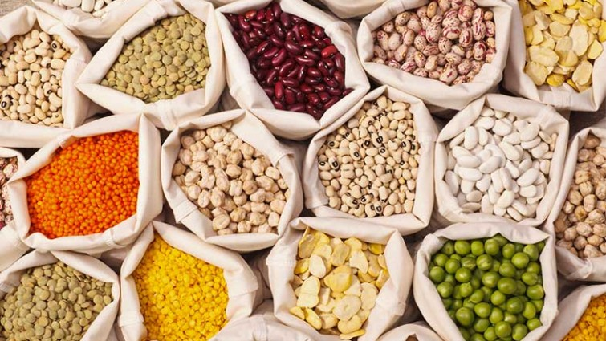

Picoteo
El picoteo más sano antes de comer o para ver la tele con amistades


En este supermercado nos preocupamos por la salud de nuestra clientela, por eso solo tenemos artículos de calidad y ningún ultraprocesado. Mira nuestras secciones de congelados, frutas frescas, verduras frescas, legumbres y picoteos.
La fruta más fresca y de temporada
La verdura más fresca y de temporada
Legumbres de origen local y calidad extraordinaria
El picoteo más sano antes de comer o para ver la tele con amistades